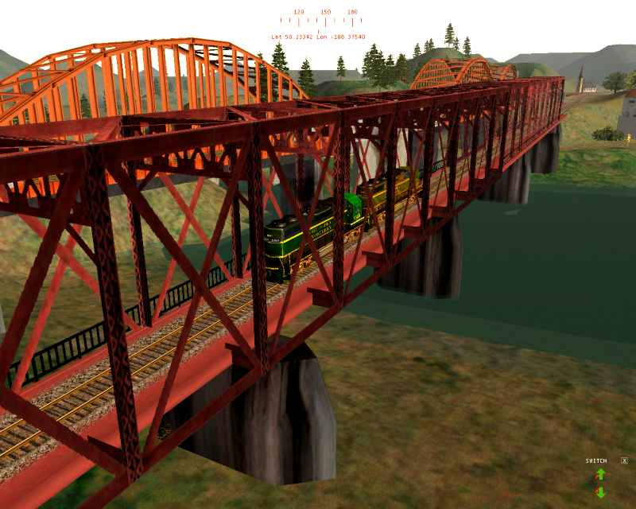

What Folders Do What in MSTS
by Jim "Sniper297" Ward
Read this in conjuction with Route Folder Structure, also by Jim Ward
The track-database, World files and Tiles Files are all independent..
Let's look at Port Ogden & Northern, on the bridge from Johnsburg to Saint Marys..

Deleting the \WORLD folder
Now I delete the \Portogden8\WORLD folder and get this:
Note the terrain is still there, in the upper right you can see a hole in the terrain for a tunnel. Train is in same location, the bridge and the visible part of the track sections is gone, but the track is still there even tho you can't see it - because what the trains actually drive on is in the portogden8.tdb and portogden8.tit files, along with the tsection.dat.
Deleting the \TILES folder
Copy the WORLD folder in from a backup, and delete the TILES folder, and I get this:
All the terrain is gone, and all the static objects are back. The WORLD and TILES files are completely independent of each other, each one will mindlessly display whatever it's supposed to without referencing the other.
Deleting BOTH the WORLD folder and the TILES folder
Now if I delete both the WORLD folder and the TILES folder, this is what I end up with:
No scenery at all. The track database is still there, note the switch display showing the switches ahead and behind the train (and they can be controlled just as if they were visible), also note the track monitor showing the next signal 1.3 miles ahead.
Thank you, thank you, no applause, just throw money.
"Out-Of-Synch" Problem
For my next trick I will demonstrate the "out of synch" problem.
Here I open PO&N 8 in the route editor, move the bridge, tear up old track and lay new track.
Since the path for the Johnsburg activity went up that bridge I got a broken path error, so I deleted that \PATH\johnsburg.pat file and made a new one. Works okay, no errors.
Next I copy the portogden8.tdb, portogden8.tit, and tsection.dat from the backup in, leaving the edited WORLD files the way they are: Train don't care where it LOOKS like the track is, it's gonna follow the track database.

We don't need no stinkin' bridges, we got flying geeps!
Enjoy.